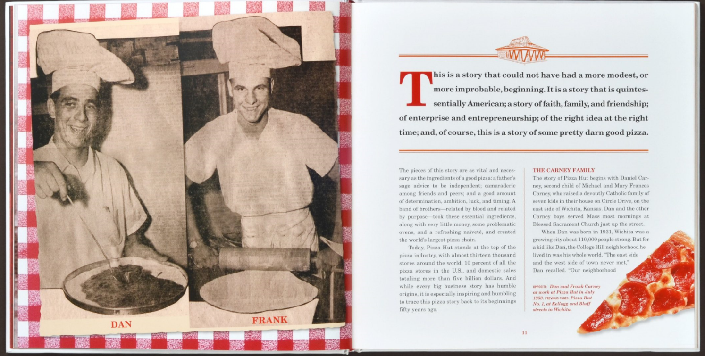
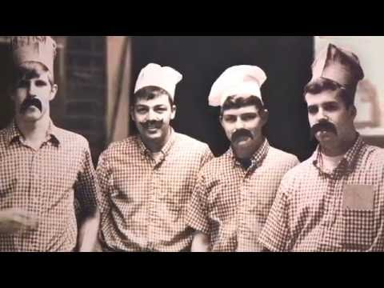

Our Story
In 1958, two college students from Wichita, Kansas, Frank and Dan Carney were approached with the idea of opening a pizza parlour.
Using $600 (US) generously borrowed from their mother,
they purchased second-hand equipment and rented a small building on a busy intersection
in their home town. Although the concept of a pizza parlour was relatively new to many Americans at that time,
the brothers quickly saw the potential of this new enterprise.
The result of their entrepreneurial efforts was the first Pizza House® restaurant and the beginning of a bright journey
towards changing the way the world experienced pizza.
From our modest beginnings, we’ve grown to become the largest pizza company in the world.
With over 14,000 restaurants in over 100 different countries,
it’s clear we don’t follow trends, we set them by talking to fans and learning from our friends all over the world.
In Canada alone, there are over 400 units across a total of 8 provinces with over 4000 team members.
No matter where you find us, you can be sure each meal you enjoy is delicious, bold, and one-of-a-kind.
WHY PIZZA HOUSE?
There’s nothing cookie-cutter about Pizza House. Not our pizzas. Not our people. And definitely not the way we live life. Around here, we don’t settle for anything less than food we’re proud to serve. And we don’t just clock in. Not when we can also become our best, make friends, and have fun while we’re at it. We’re the pizza company that lives life unboxed. We don’t ever want to blend in: pushing boundaries is part of our heritage. We are the creators of the original Stuffed Crust, the brand who first delivered pizza to places like the White House, the top of Mount Kilimanjaro, and to outer space. Pizza House stands for bold innovation. We never stop driving ourselves to deliver the most delicious innovations in the industry. 
At Pizza House, we don’t just make pizza. We make people’s days. Pizza House was built on the belief that pizza night should be special, and we carry that belief into everything we do.